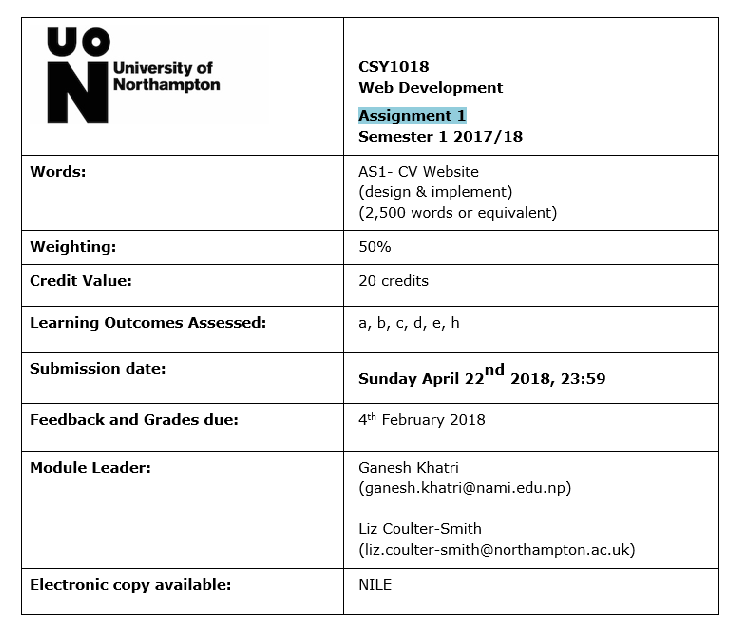
Table of Contents
- 1. INTRODUCTION
- 2. MY EXPERIENCE
- 3. GUI DESIGN
- 4. WIREFRAME
- 5. TESTING
- 6. CONCLUSION
- 7. REFERENCE
INTRODUCTION
The given assignment is to develop a personal website using HTML and CSS. As todays generation is highly depend upon computer and technology, this assignment aims to build up an individual's skill and interest towards the computer field. It has provided an oppurtunity to show our skills on developing a website adding special features.
I have created my own personal website which contains six HTML pages.They are:
1. Home page: Landing page of the website
2. About page: Consists of short description about myself
3. CV page: Contains Cirriculum vitae
4. Social-media: Contains links to the social media
5. Model Gp: Report of project
6. Contact: Contains contact form and map location
As we know, now a days people are more into smaller devices such as smartphones, tablets, I-pads etc since they are portable and easy to use anytime, anywhere. So, I have also develop responsive designs for above pages so that people can view my site in thier mobile gadgets.
MY EXPERIENCE
I had both good as well as bad experience while doing this project. As I am a beginner in web developing and designing field I had a new experience and learnt new features. I feel that I have develop some new skills and ace my creativity level. Web designing is not an easy task but I have learned that if there is the determination and focus, we can create a good website with extra features.
I also learned that writing codes in HTML and designing in CSS outputs a website we desire. I used Sublime Text Editor to create my website. I got to know about the new trends on designing field while doing the assignment. I found this as a really interesting subject matter and hoped to improve lot in a better way in the coming days.
After completion of my assignment I also became able to use various properties of CSS such as FlexBox, hover, responsive designs, etc. Now I can also push my website in GitHub and make my website live. So, I can say this is my first stage as a web developer.
GUI DESIGN
WIREFRAME
Wireframe of Home page
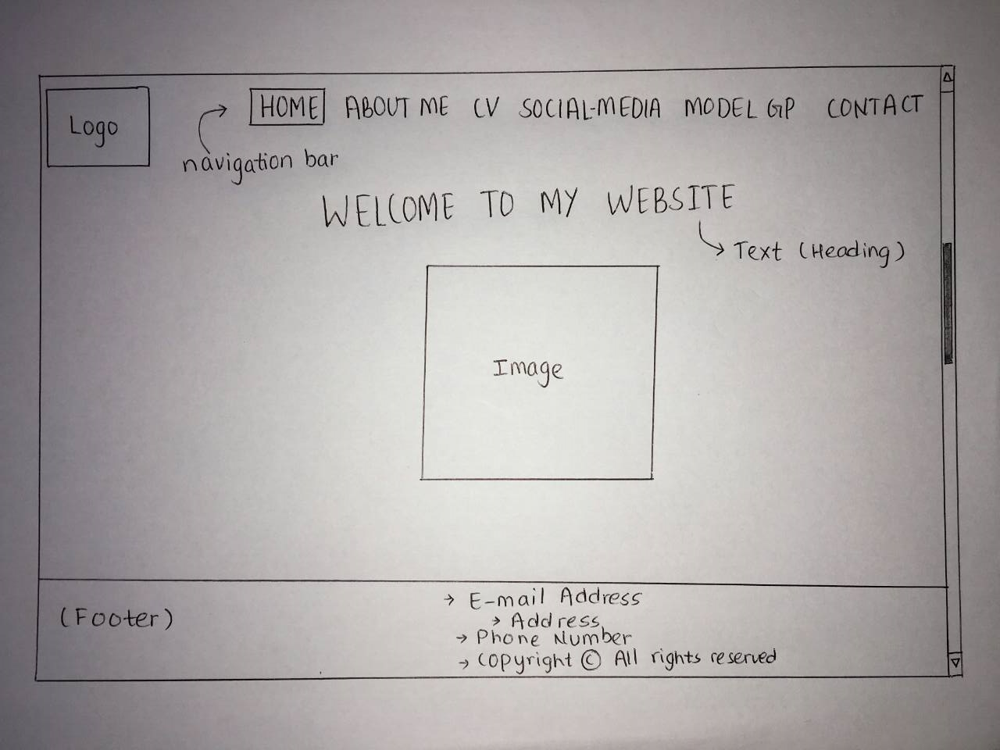
Wireframe of About me page
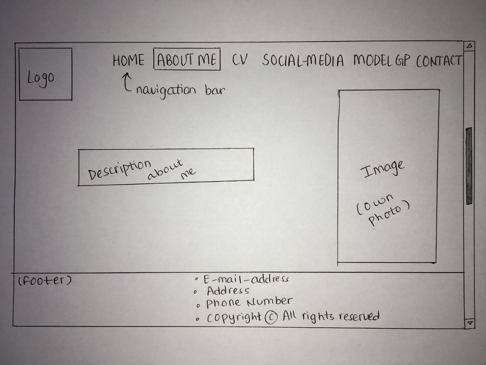
Wireframe of CV
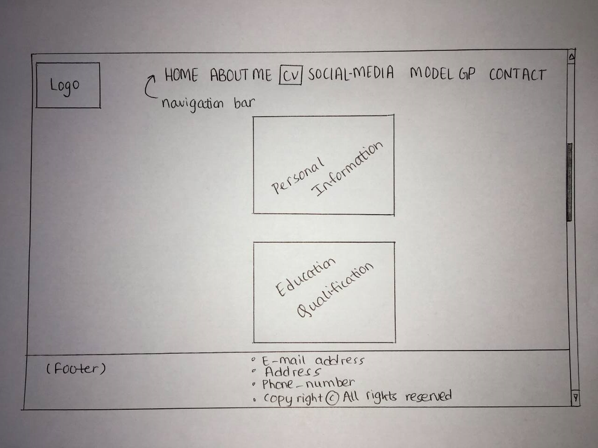
Wireframe of Social-media
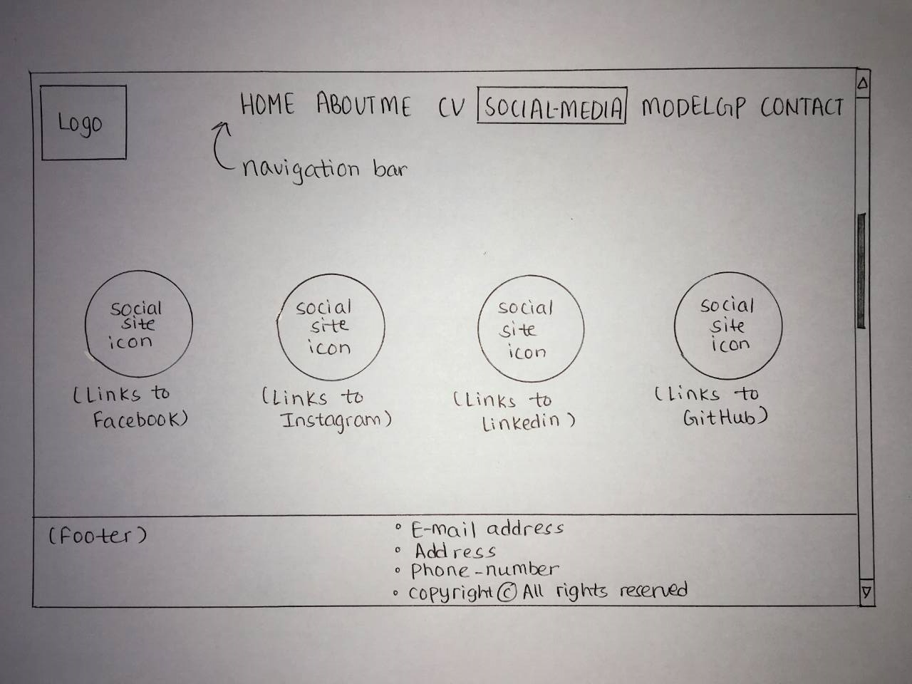
Wireframe of Contact
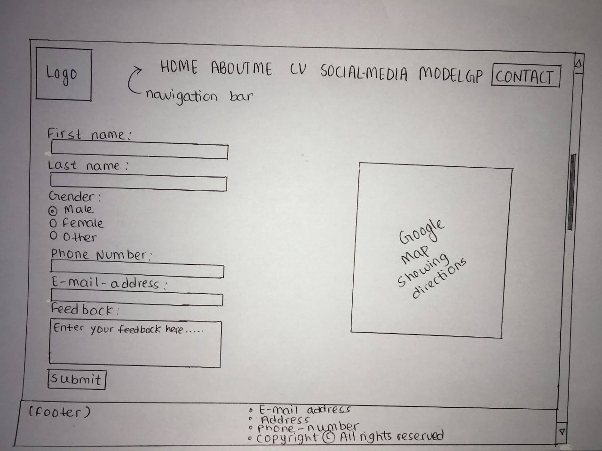
RESPONSIVE WIREFRAME
Responsive wireframe of Home page
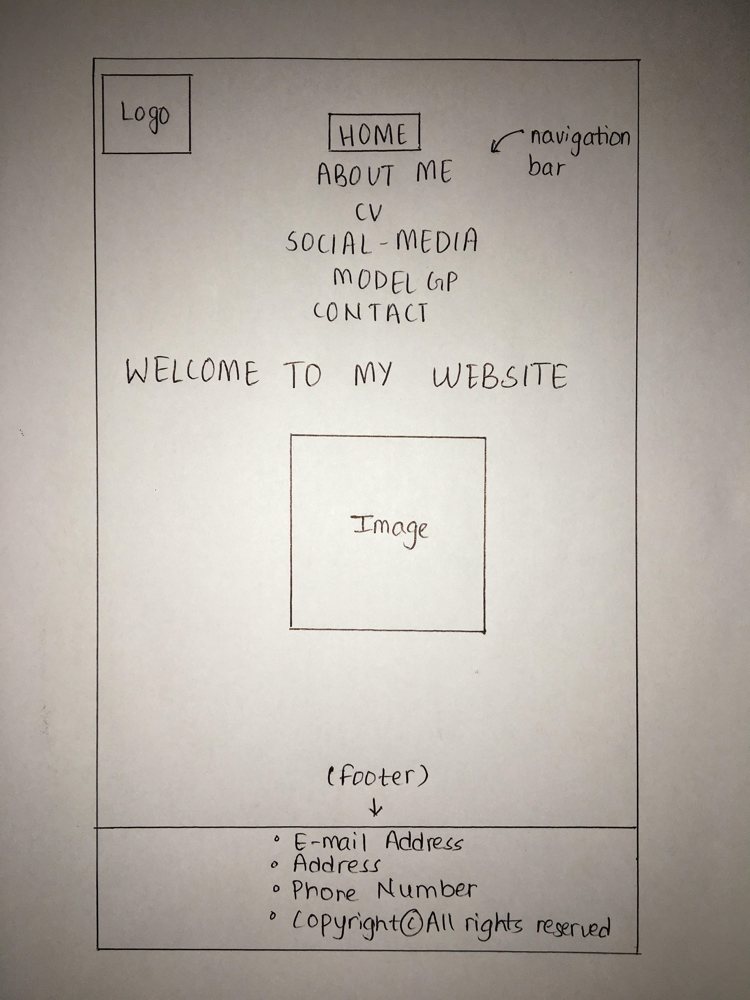
Responsive wireframe of About me page
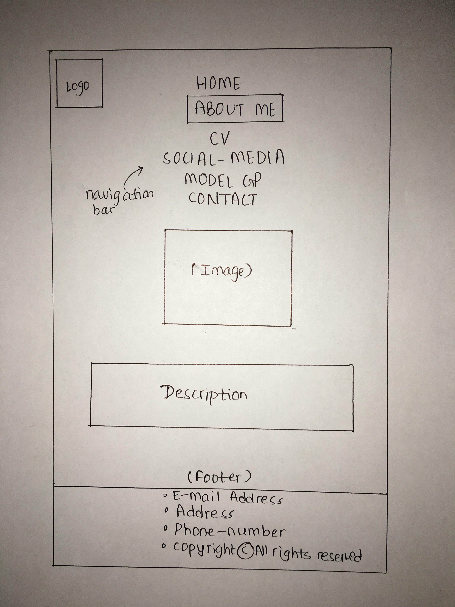
Responsive wireframe of CV
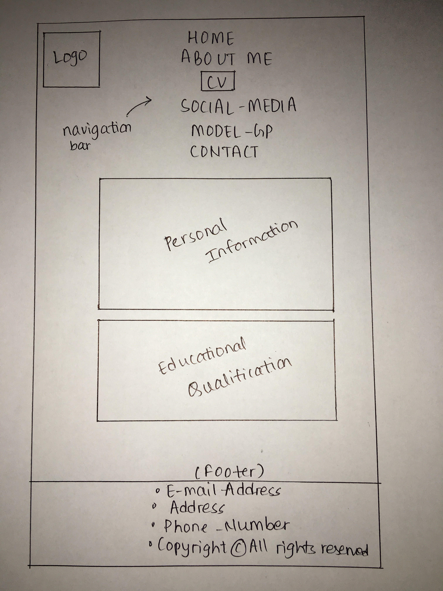
Responsive wireframe of Social-media
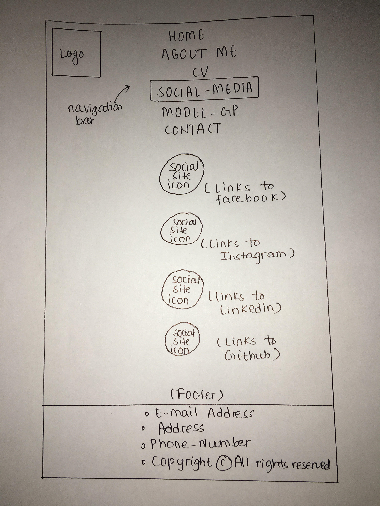
Responsive wireframe of Contact
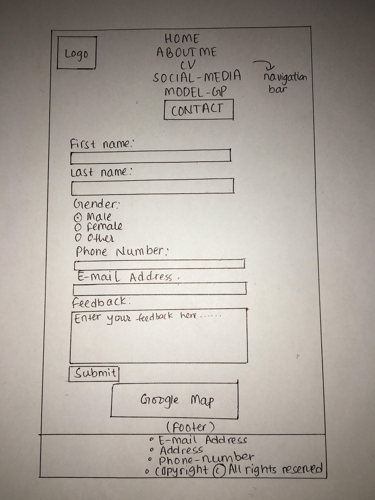
TESTING
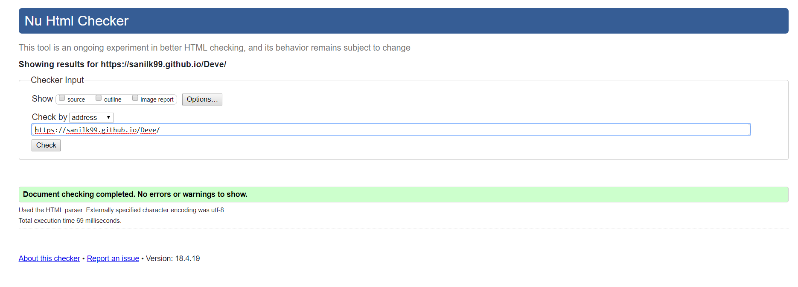
CONCLUSION
After the completion of developing the website, I have come to an conclusion that for developing a website using HTML and CSS, we write codes of the webpage in the HTML file and for making it more attractive and user friendly, we write the designs in the CSS file. It was really interesting using various features of CSS while designing my website. The task was not that easy but was still wasnot worthless. This was my very first attempt on developing a personal website and I think I got successful.
REFERENCE
W3Schools Online Web Tutorials (1999). W3Schools [online] Available at:
https://www.w3schools.com/ [Accessed on 4 Apr 2018].
Falticon, the largest database database of free vetcor icons (2010). Flaticon [online] Available at:
www.flaticon.com [Accessed on 15 April 2018].